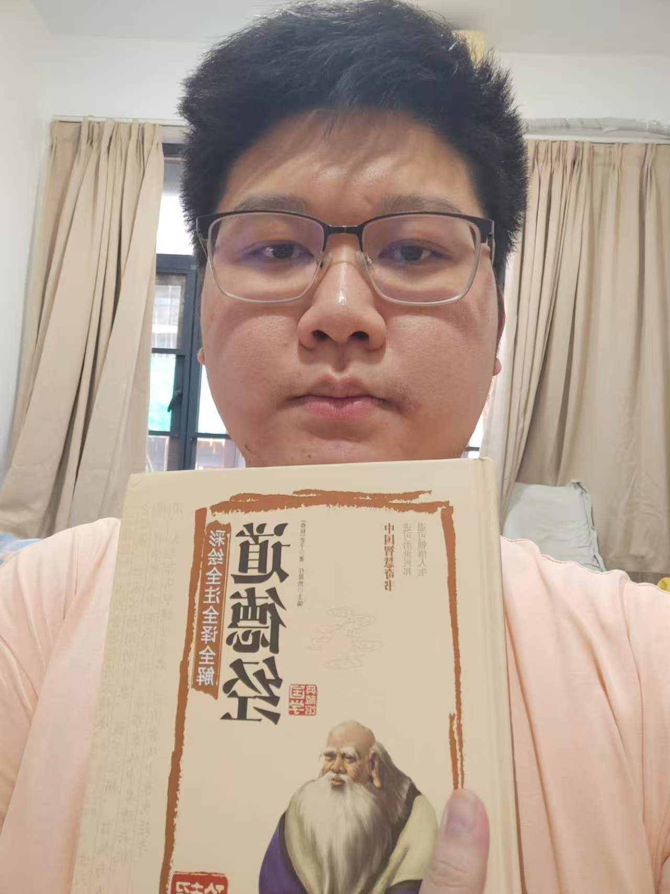
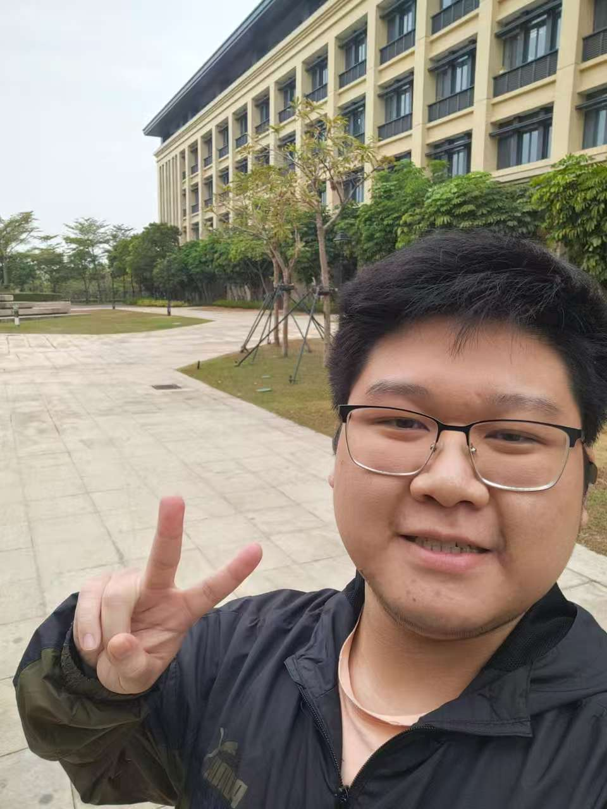
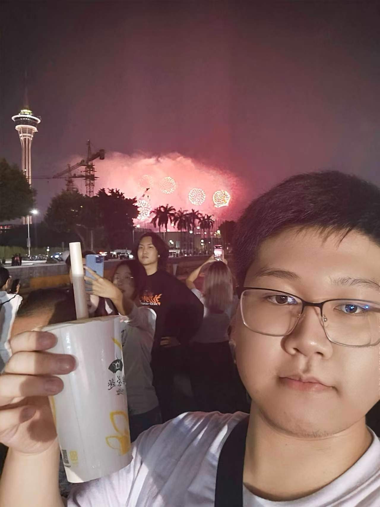
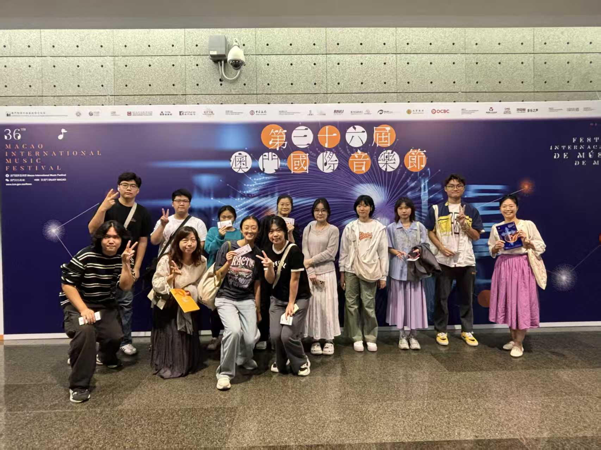

My Values and Beliefs
I believe in the principle of "integration of knowledge and action". During my university years, I not only need to diligently acquire professional knowledge but also apply this knowledge through practice to turn it into practical skills. I value teamwork and also enjoy the process of independent thinking and problem-solving.
My Career Aspirations
- Short-term:
Master front-end development before graduation and be able to independently complete small projects. - Mid-term:
Enter the desired industry, start from an assistant position, and gradually grow into a professional who can handle tasks independently. - Long-term:
I hope to deeply specialize in my field, become an influential professional, and maintain the habit of lifelong learning.
My Interests and Hobbies
- Reading:
Prefers literary essays, social science documentaries and technical books related to one's profession. Has the habit of immersing oneself in reading before bedtime or on weekends, using words to expand one's cognitive boundaries. - Walking:
Every day after dinner, I take a walk in the campus or in the surrounding parks. This helps my brain break away from the learning state, and during the slow walk, I can sort out my thoughts and relieve stress. - Enjoying the Scenery:
I enjoy going to the mountains and lakes around the city during weekends or holidays. I use my eyes and camera to capture the natural light and shadow, and also enjoy the peace of having a conversation with the scenery when I'm alone. - Listening to music:
In my free time, I always like to put on headphones and listen to music. I prefer soothing classical music and light music.Listening to music: In my free time, I always like to put on headphones and listen to music. I prefer soothing classical music and light music. I also listen to pop music to relax and let the melody relieve the fatigue from studying. I also listen to pop music to relax and let the melody relieve the fat In the music, I can sort out my thoughts and calm myself down.igue from studying. In the music, I can sort out my thoughts and calm myself down.




My Blog Posts
Currently, I am setting up my own personal blog. In the future, I will share my study notes, project reviews and thoughts on personal growth here.
My contact
Email: dc22697@um.edu.mo
Phone: (+853) 65808552